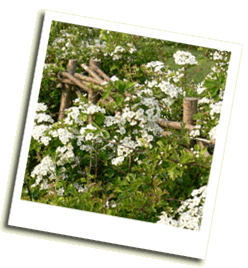

Hedge 1 year after laying The Isle of Wight Hedgerow Group exists to encourage the planting
of new hedges and the good management of existing ones, and to promote the
art of hedgelaying. The group organises the annual Isle
of Wight Hedgelaying Competition and is made up of individuals and organisations,
from the Island and the mainland, who are interested in hedgerows on the
Isle of Wight.
Members include: